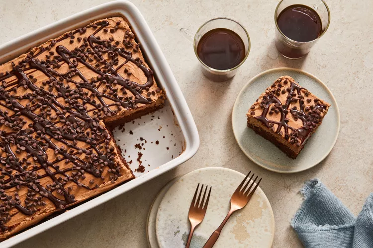

Chocolate Poke Cake

Ingredients
- 1 box chocolate cake mix, plus ingredients listed on box (eggs, oil, water)
- 1 (14 oz) can sweetened condensed milk
- 1 cup chocolate syrup
- 1 container (8 oz) whipped topping (e.g., Cool Whip)
- Chocolate shavings or sprinkles, for garnish (optional)
Instructions
- Preheat oven to temperature specified on cake mix box. Grease and flour a 9x13-inch baking dish.
- Prepare the chocolate cake batter according to the instructions on the box.
- Pour the batter into the prepared baking dish and bake according to package instructions.
- Once the cake is baked, remove it from the oven and let it cool for about 10 minutes.
- Using the handle of a wooden spoon or a similar tool, poke holes all over the cake.
- Slowly pour the sweetened condensed milk over the cake, making sure it fills the holes.
- Next, pour the chocolate syrup evenly over the cake, allowing it to seep into the holes as well.
- Cover and refrigerate the cake for at least 1 hour to allow it to set.
- Before serving, spread the whipped topping over the chilled cake.
- Garnish with chocolate shavings or sprinkles, if desired.
- Slice, serve, and enjoy!